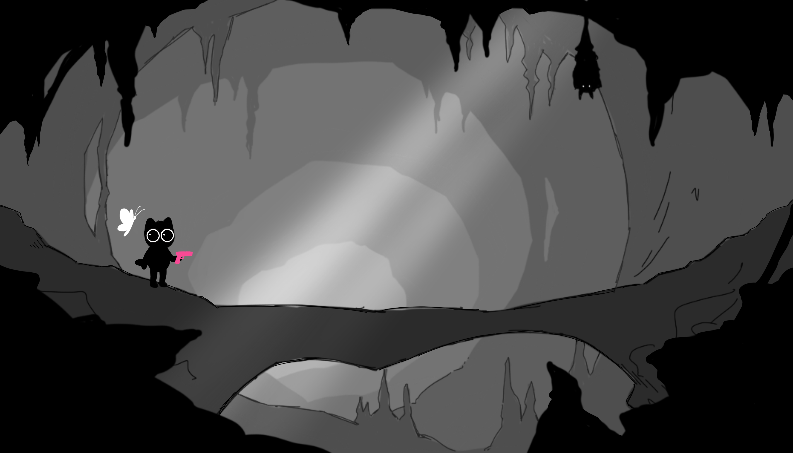
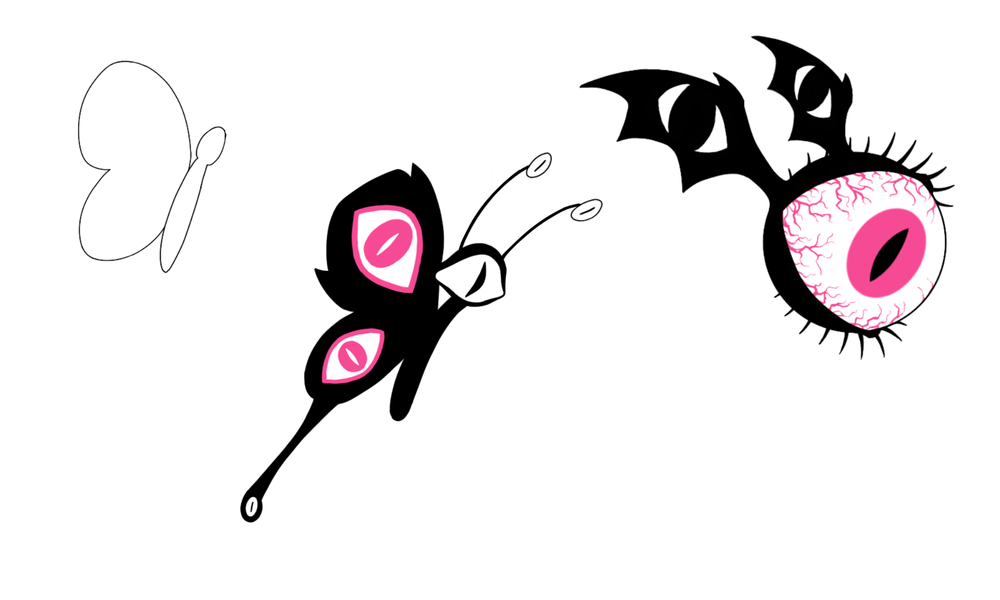
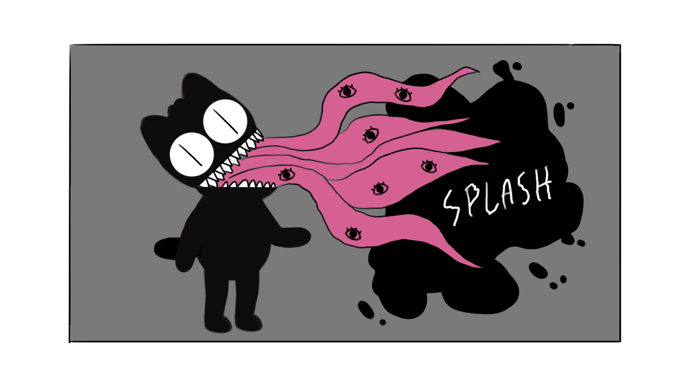

Game Jam 2023
Prototype de jeu de plateforme narratif développé en 24h avec Godot lors de la Game Jam 2023. 2ème place obtenue. Projet réalisé en équipe de 4 (2 développeurs, 2 graphistes). Concours organisé par le kot à projet « Le Linux ». Le thème était « solutions non violentes » : tuer les adversaires est facile, mais l'objectif du joueur est de sortir du puits en utilisant le moins de violence possible pour ne pas sombrer dans la folie.
Technologies
Contexte
Fonctionnalités Principales
Déplacements et Saut
Mécaniques de plateforme classiques : déplacement gauche/droite, saut et interaction avec l'environnement (poussée d'objets).
Collisions et Ennemis
Système de détection de collisions, comportements ennemis simples et pièges statiques dans les niveaux.
Ambiance Visuelle
Esthétique noir et blanc avec accent rose pour certains éléments perturbants, calques multiples pour l'effet 2.5D.
Séquences Animées
Courtes animations d'introduction et transitions réalisées avec After Effects pour améliorer la narration.
Niveaux
Plusieurs niveaux avec progression vers la surface : montée progressive de la lumière et complexité des obstacles.
Soundtrack
Musique d'ambiance conçue pour renforcer le malaise et l'atmosphère du jeu.
Graphisme & Personnages
Personnages
- Bobbi : petit chat noir, instable mentalement et personnage jouable.
- Le papillon maléfique : manifestation des tendances psychopathiques de Bobbi.
- Obstacles et créatures : silhouettes noires et slimes qui peuplent la grotte.
Décors
- Niveaux dessinés sur plusieurs calques pour créer une profondeur 2.5D.
- Menu principal et niveaux illustrés en style monochrome avec accents de couleur.

